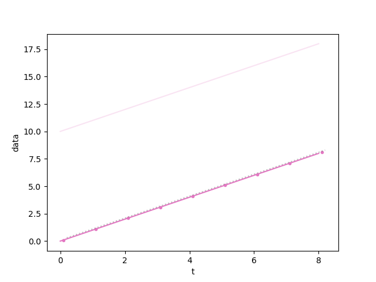

Note
Go to the end to download the full example code
show an easy method for matching colors using pyspecdata
import pyspecdata as psd
import matplotlib.pylab as plt
from numpy import r_
# when we set the plot color, it overrides any defaults
a = psd.nddata(r_[0:9], "t", alpha=0.5)
# after we do this, we no longer need to specify the color argument to plot --
# it's a property of the data. It chooses the next color in the default matplotlib cycle
a.set_plot_color_next()
# If you want to give a specific color, note that the above is equivalent to
# a.set_plot_color(psd.mpl_utils.default_cycler)
psd.plot(a)
# as long as we don't override that property,
# it will continue to be used
b = a + 10
psd.plot(b, alpha=0.2)
# and if we copy our properties, this gets copied as one of them
c = psd.nddata(r_[0:9] + 0.1, "t", alpha=0.2)
c.copy_props(a)
psd.plot(c, ".")
d = psd.nddata(r_[0:9] + 0.2, "t", alpha=0.2)
d += 0.1
# but wait! what if I have an unrelated set of data, but still want to move to
# the next color in the default matplotlib cycle? just do this:
d.set_plot_color_next()
psd.plot(d, ":", alpha=0.5)
plt.show()
Total running time of the script: (0 minutes 0.132 seconds)